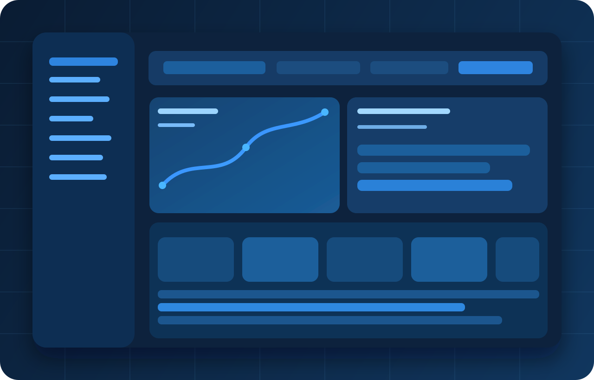
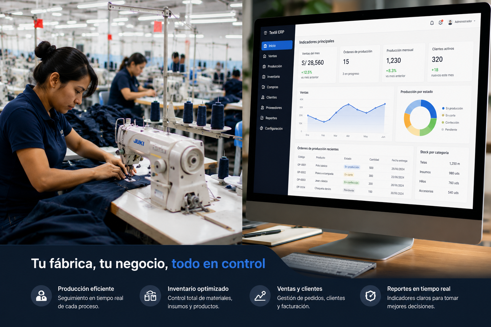

ERP especializado para confección
Gestiona el taller con datos reales, no con suposiciones.
Konfexia integra planeación, producción, trazabilidad y costos en tiempo real para que todo el equipo tome decisiones con una sola fuente de verdad.



Por qué Konfexia
No adaptamos tu taller a un software genérico. Modelamos tus procesos de confección como realmente suceden en planta para que la tecnología acompañe la operación y no la frene.
Cobertura funcional
Konfexia elimina islas de información entre producción, bodega y dirección, y convierte el día a día de planta en una operación medible.

Flujo de trabajo
Definición de referencia, cantidades, rutas y fechas comprometidas.
Balanceo por líneas con visibilidad de carga y restricciones reales.
Seguimiento en vivo para corregir desviaciones antes del impacto final.
Lectura de productividad, costo y cumplimiento para decisiones futuras.

Operación con control total
Entrega con mayor confianza, reduce variaciones de costo y profesionaliza la toma de decisiones en planta con una ruta clara de implementación.